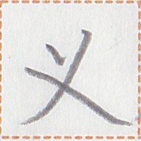
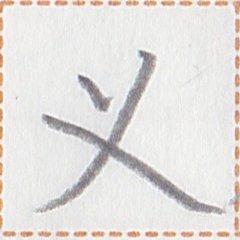

← Previous
Index
Next →
English: The coal is burning.
Chinese: 煤炭在燃烧着。
Chinese (pinyin): Méitàn zài ránshāozhe.
Japanese: 石炭が燃えています
Pekzep (latin transcription): huo2 sy2 aim2 kan1.
Pekzep (hanzi transcription): 墨石在火。
Pekzep (linzklā): 

 

Sound:
Analysis: